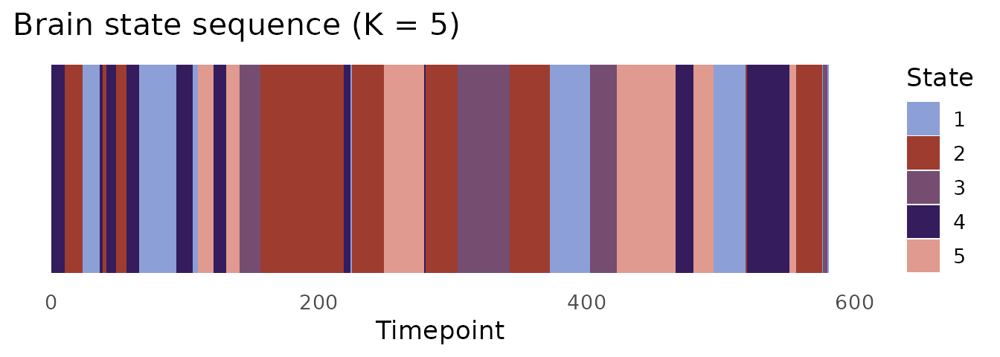
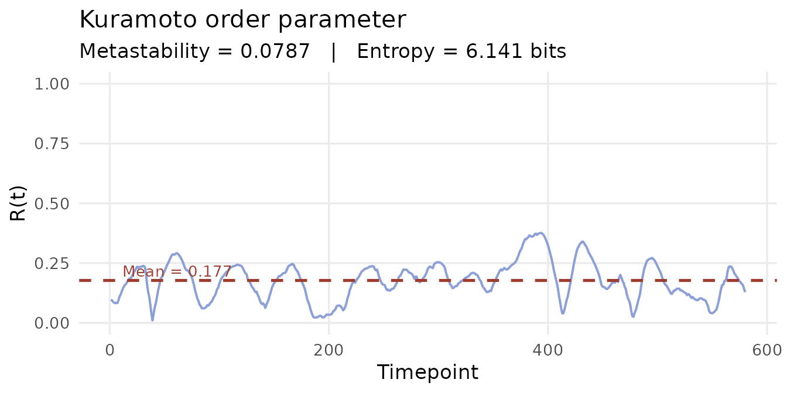

Phase-based dynamic FC: Hilbert transform, LEiDA, and Kuramoto
Source:vignettes/phase-based-fc.Rmd
phase-based-fc.RmdOverview
Phase-based dynFC methods characterise connectivity through the instantaneous phase of the signal. Rather than asking how correlated two regions are over a window, they ask: are two regions synchronised at this exact moment — oscillating in phase, or in anti-phase?
This perspective originates in the physics of coupled oscillators. Each channel’s timeseries, once bandpass-filtered to a frequency band of interest, behaves like a noisy oscillator. The Hilbert transform extracts the instantaneous phase of that oscillation at every timepoint. Two channels are phase-locked when their phases move together; they are in anti-phase synchrony when their phases are consistently offset by π radians.
Although this vignette uses BOLD fMRI data and refers to parcels and TR throughout, the same methods apply to any band-limited neurophysiological signal — including EEG narrow-band epochs, LFP, and MEG.
dynR implements three phase-based methods:
| Function | Output | Method |
|---|---|---|
hilbert_phases() |
Instantaneous phases | Hilbert transform |
dyn_phase_lock() |
Phase-locking matrices + LEiDA vectors | dPL / LEiDA |
kuramoto() |
Synchrony, metastability, entropy | Kuramoto order parameter |
Step 1: Bandpass filtering
Phase extraction via the Hilbert transform assumes the signal is approximately monocomponent — dominated by oscillations within a single frequency band. Applying a bandpass filter before the transform is therefore not merely conventional; it is necessary. Without it, broadband noise and low-frequency drift corrupt the phase estimate, producing meaningless phase differences between parcels.
For resting-state fMRI at TR = 2 s, the standard band is 0.01–0.1 Hz, which preserves the slow fluctuations that drive functional connectivity while attenuating scanner drift (< 0.01 Hz) and physiological noise (> 0.1 Hz).
ts_filt <- apply(ts, 1, bandpass_filter,
flp = 0.01, fhi = 0.1, delt = 2, order = 2)
ts_filt <- t(ts_filt) # restore [N × Tmax] orientation
dim(ts_filt)
#> [1] 200 600The apply() call filters each parcel (row)
independently; t() restores the
convention expected by downstream functions.
Step 2: Instantaneous phases via the Hilbert transform
hilbert_phases() constructs the analytic
signal for each parcel — a complex-valued representation whose
argument gives the instantaneous phase angle at every timepoint.
phases <- hilbert_phases(ts_filt)
dim(phases) # [200 × 600]
#> [1] 200 600
range(phases) # in [-pi, pi]
#> [1] -3.141479 3.141498Each row is a parcel; each column is a timepoint. Values are in radians.
Step 3: Dynamic phase-locking matrix (dPL) and LEiDA
The dPL matrix
At each timepoint t, dyn_phase_lock()
constructs an N × N phase-locking
matrix:
Entry (i, j) = 1 when parcels i and j are perfectly in phase; −1 when perfectly anti-phase. The matrix is symmetric and has ones on the diagonal. Ten timepoints are trimmed from each end to avoid Hilbert transform edge effects.
The leading eigenvector (LEiDA)
The dominant structure in each dPL matrix is captured by its leading eigenvector — the eigenvector corresponding to the largest eigenvalue. This vector has one entry per parcel:
- Parcels with the same sign are synchronised with each other at that moment.
- Parcels with opposite signs are in anti-phase.
- The magnitude of each entry reflects how strongly that parcel participates in the dominant pattern.
By tracking how this vector evolves over time and clustering it, we identify recurring whole-brain phase-locking patterns — brain states — without ever specifying a window length. This is the LEiDA framework (Cabral et al., 2017).
dpl <- dyn_phase_lock(phases)
dim(dpl$sync_conn) # [200 × 200 × 580]
#> [1] 200 200 580
dim(dpl$leida) # [580 × 200]
#> [1] 580 200
t1 <- dpl$sync_conn[, , 1]
cat("Symmetric: ", isTRUE(all.equal(t1, t(t1))), "\n")
#> Symmetric: TRUE
cat("Diagonal = 1: ", all(abs(diag(t1) - 1) < 1e-10), "\n")
#> Diagonal = 1: TRUEStep 4: Brain state discovery with K-means
LEiDA vectors are clustered across time to identify recurring phase-locking patterns. K-means is the standard choice (Cabral et al., 2017; Lord et al., 2019).
Choosing K
There is no universal rule for K. Typical choices in resting-state
research range from 2–3 (coarse global organisation) to 5–10 (finer
network distinctions). The nstart argument is critical —
K-means is sensitive to initialisation, so running many random restarts
and keeping the best solution is essential.
State sequence
state_cols <- c("#8D9FD7", "#9E3C30", "#754D71", "#341C5D", "#E19A8F")
ggplot(data.frame(t = seq_along(km$cluster),
state = factor(km$cluster)),
aes(x = t, y = 1, fill = state)) +
geom_tile(height = 1) +
scale_fill_manual(values = state_cols, name = "State") +
labs(x = "Timepoint", y = NULL,
title = "Brain state sequence (K = 5)") +
theme_minimal(base_size = 13) +
theme(axis.text.y = element_blank(),
axis.ticks.y = element_blank(),
panel.grid = element_blank())
The state sequence (km$cluster) feeds directly into
stateR for fractional occupancy, dwell time, and Markov
transition analysis.
Step 5: Kuramoto order parameter
The measure
The Kuramoto order parameter R(t) measures the degree of global phase synchrony across all parcels at each timepoint:
R = 1 means all parcels are perfectly phase-locked. R = 0 means phases are uniformly distributed — no coherent synchrony anywhere.
Metastability
The standard deviation of R(t) over the full scan is the metastability index: a measure of how much the global synchronisation level fluctuates.
- High metastability: the brain moves fluidly between synchronised and desynchronised states — a flexible, exploratory dynamic repertoire.
- Low metastability: synchronisation is more rigid, with less spontaneous switching.
Metastability has been linked to cognitive flexibility (Deco et al., 2017). Reductions have been observed in ageing (Cabral et al., 2014) and certain psychiatric conditions. Psilocybin markedly increases metastability, consistent with a pharmacologically expanded dynamic repertoire (Lord et al., 2019).
kop <- kuramoto(phases, base = 2, n_bits = 8)
cat("Metastability:", round(kop$metastability, 4), "\n")
#> Metastability: 0.0788
cat("Entropy (bits):", round(kop$entropy, 4), "\n")
#> Entropy (bits): 6.1722
df_kop <- data.frame(t = seq_along(kop$synchrony), R = kop$synchrony)
ggplot(df_kop, aes(x = t, y = R)) +
geom_line(colour = "#8D9FD7", linewidth = 0.7) +
geom_hline(yintercept = mean(kop$synchrony),
colour = "#9E3C30", linetype = "dashed", linewidth = 0.9) +
annotate("text",
x = max(df_kop$t) * 0.02,
y = mean(kop$synchrony) + 0.04,
label = paste0("Mean = ", round(mean(kop$synchrony), 3)),
colour = "#9E3C30", size = 3.5, hjust = 0) +
scale_y_continuous(limits = c(0, 1)) +
labs(x = "Timepoint", y = "R(t)",
title = "Kuramoto order parameter",
subtitle = paste0("Metastability = ", round(kop$metastability, 4),
" | Entropy = ",
round(kop$entropy, 3), " bits")) +
theme_minimal(base_size = 13) +
theme(panel.grid.minor = element_blank())
References
Cabral, J. et al. (2017). Cognitive performance in healthy older adults relates to spontaneous switching between states of functional connectivity during rest. Scientific Reports, 7(1), 5135. https://doi.org/10.1038/s41598-017-05425-7
Deco, G. et al. (2017). The dynamics of resting fluctuations in the brain: metastability and its dynamical cortical core. Scientific Reports, 7(1), 3095. https://doi.org/10.1038/s41598-017-03073-5
Lord, L.-D. et al. (2019). Dynamical exploration of the repertoire of brain networks at rest is modulated by psilocybin. NeuroImage, 199, 127–142. https://doi.org/10.1016/j.neuroimage.2019.05.060